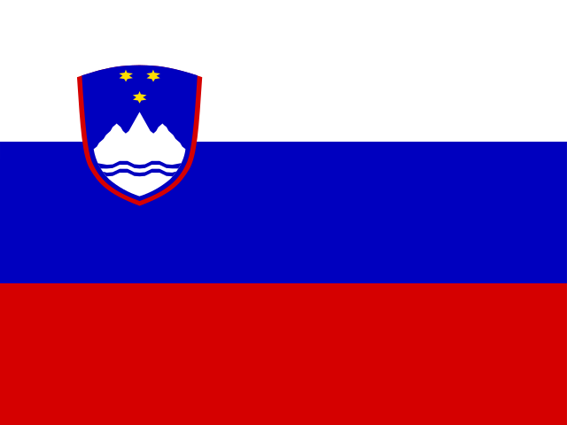

Slovenia: verified news and risk
Europe · 6 events · Latest coverage 30 Oct
In brief
Slovenia appears in 6 events on ATHENA, across 4 of its ten sections. None is rated high-risk.
By section
Most important events
- Hong Kong seeks bigger role for yuan in regional trade, treasury chief saysRisk 0.0 · 25 Oct
- Taiwan Rebukes Botswana Over China StanceRisk 0.9 · 22 Oct
- AOT Engages Over 50 Airlines and Airport at Routes World 2026 to Boost Thailand's Global ConnectivityRisk 0.0 · 26 Oct
- Ho Chi Minh City unveils tower design for multi-level interchange linking roads to seaports, Long Thanh airportRisk 0.9 · 29 Oct
- Chubb Life Announces Australian Open 2027 Tickets Giveaway Social Campaign & Live Viewing PartyRisk 0.0 · 30 Oct
- Sun Group Facilities in Ha Long Connect Bay Cruises With Shore Activities Ahead of NovemberRisk 0.0 · 29 Oct
Trackers involving Slovenia
Countries in the same events
Local news from Slovenia
Loading…